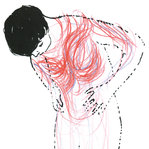

Top News
Before Election, U.S. Spies Heard Talk of Using His Advisers
- The conversations focused on Paul Manafort and Michael T. Flynn, according to three current and former American officials.
- The intelligence was among clues received last summer as the U.S. began examining Russian attempts to disrupt the election.
Health Bill Expected to Leave 23 Million More Uninsured
A bill to dismantle the Affordable Care Act that narrowly passed the House would increase the number of uninsured by 23 million in 2026, the Congressional Budget Office projected.
The Pope’s Gifts to Trump Send Some Clear Messages
The keepsakes that Pope Francis gave President Trump at their first face-to-face meeting appeared to underscore the divergent views of the world that the two leaders embody.
Trump Organization Hedges on Donating All Foreign Profits
The company told Congress it was all but impossible to identify every foreign government official who walked through the doors of its hotels.
Mediator
Sean Hannity, a Murder and Why Fake News Endures
As the case of the Seth Rich murder shows, uncorroborated stories will spread as long as some people want to tell them, and others want to believe.
Mutant Genes Give Inspiration for New Heart-Disease Drugs
Some people carry mutations that leave them nearly impervious to heart attacks. Learning how these genes work has led to a novel experimental treatment.
Got a confidential news tip?
The New York Times offers several ways to get in touch with and provide materials to our journalists. Learn more.
Found at the Scene in Manchester:
Shrapnel, a Backpack and a Battery
The Times got access to evidence photographed at the crime scene, and it suggests an improvised device made with forethought and care.
Police Seek ‘Network’ Tied to Bomber
Investigators raced to track down what they called Salman Abedi’s “network,” in the first official confirmation that the police believe he got help in the Manchester attack.
RELATED COVERAGE
Audio
Listen to ‘The Daily’
What happens in the hours between an act of terror and the claiming of responsibility?
Follow The Daily: Daily SMS iTunes Radio Public Stitcher
Your Evening Briefing
Here’s what you need to know at the end of the day.
Your Morning Briefing
Here’s what you need to know to start your day.
California Today: Grabbing Hold of the Life Sciences Industry
The humming life sciences industry, California’s leading role on climate change, and how to have Catalina to yourself.
Tech Fix
Products That Do and Don’t Protect Your Phone
Why you should buy a case for your smartphone, and maybe a screen protector, but pass on an extended warranty.
Personal Health
Strategies to Navigate the Emergency Room
Complaints often stem from a misunderstanding of how emergency rooms work and how patients themselves can be helpful.
Nestlé Taps Water Wells, Leaving Locals High and Dry
The company can draw 130 million gallons a year from one Michigan site at almost no cost. And its application to pump even more has opened a political fight.
Charcoal or Gas? Depends on What You’re Grilling
You get great smoky flavor from cooking over or beside coals or wood. But on a Wednesday night there are few things easier than lighting a gas grill.
-
The Sweethome Guides to the Best:
Charcoal Grills | Gas Grills | Accessories
China’s Addiction to Debt Now Threatens Its Growth
A major credit rating agency sounded the alarm on Wednesday, saying the steady buildup of debt would erode China’s financial strength.
A Dignified End for New York’s Forgotten Veterans
Some 50 veterans die poor and alone in New York City each year. A network of former military peers makes sure they receive a dignified send-off with all due ceremony.
More News
Morning Briefing: Australia Edition
The news and stories that matter to readers in Australia. Sign up to get it by email, Monday through Friday.
Morning Briefing: Asia Edition
The news and stories that matter to readers in Asia. Sign up to get it by email, Monday through Friday.
Morning Briefing: Europe Edition
The news and stories that matter to readers in Europe. Sign up to get it by email, Monday through Friday.
Morning Briefing
The news and stories that matter. Delivered to your inbox Monday through Friday.
Australia Picks
When Colleges Dangle Money to Lure Students
There is a May 1 deadline for students to choose a college and place a deposit, but increasingly, the negotiations continue well beyond that.
The Lessons of Rihanna’s Success
The singer has gone from fashion plate to fashion force in under five years. But is her success a new paradigm or a paradox?
Wendy Whelan’s First Balanchine Ballet
The former City Ballet principal recalls learning of the choreographer’s death, and longing to nurture a sense of connection with him.
Australia’s ‘Stolen Generations’ Tell Their Stories
In “Generations Stolen,” Matthew Sherwood documents the fates of mixed-race aboriginal children who had been kidnapped from their families during Australia’s disastrous experiment with forced assimilation.
Court Ruling Could Make Taiwan First Place in Asia to Legalize Gay Marriage
If the island’s legislature doesn’t act in the next two years, same-sex couples can register their marriages with the authorities, the constitutional court said.
Miles of Ice Collapsing Into the Sea
Some scientists fear that West Antarctica’s immense ice sheet may have entered the early stages of an unstoppable disintegration.
American Leadership: We Can’t Do It for Free
President Trump’s proposed cuts in diplomacy and aid would hurt America and its allies.
A Terrorist’s Target
I was a 17-year-old waiting to get into a disco in Tel Aviv when a suicide bomber approached.
Republicans, Get Ready for the Trumpcare Headlines
Insurers fleeing, premiums soaring. The fallout is obvious.
David Leonhardt
C.B.O. Report Reveals Trumpcare’s Fatal Flaws
Any law based on the House bill will worsen the health care system.
User Subscriptions

Watching
Loading...
timesvideo
explore all videos »Inside Nytimes.com
-
Movies
In ‘Baywatch,’ Surf, Sand and Lots of Skin
-
Opinion
What Made Theresa May Run With the Pack
-
Book Review
New Memoirs Deal With the Human Body
-
Theater
Schemes for a Better Life in ‘Can You Forgive Her?’
-
Opinion
Macron’s Disastrous Eurozone Plan
Creating a budget for the currency union could end up driving Europe apart.
-
Times Insider

Great Reads From Around the Web
-
Magazine

Janet Mock on Being Called a ‘Trans Advocate’
-
Opinion
The Price of ‘Disability Denial’
-
Travel
Exploring Touchstones of Piet Mondrian’s Life
-
Television
Heard the One About the Angsty Comic?
-
Opinion
Why Saudi Women Are Literally Living ‘The Handmaid’s Tale’
My own teenage years in Saudi Arabia were traumatic enough. Its female citizens face a life sentence of male dominion.
-
Science
How Whales Became the Planet’s Biggest Animals
Real Estate »
International Real Estate
House Hunting in … Colombia

In Cartagena, the market has been strong for the last 20 years, since the city’s centuries-old houses began to be restored as luxury properties.
Loading...